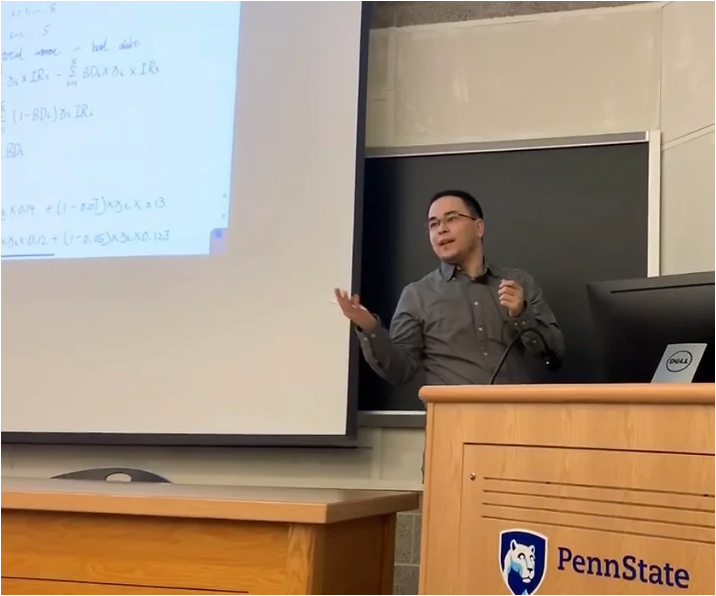

Fireside Chats
About Me
Hey there! I'm Jushkun, I'm a applied scientist with a knack for turning complex problems into elegant solutions. With a Ph.D. in Operations Research & Industrial Engineering from Penn State, I've got the skills to pay the bills. I've worked with China Unicom, Meta, Koch Engineered Solutions, TE Connectivity. At China Unicom, I worked on building a cutting-edge graph data analytics platform, making user data work harder and smarter. Over at Meta, I optimized the ROI of human workforce and helped make their platforms safer for everyone. When I'm not slaying data dragons, you can find me building cool apps, grappling on the Brazilian Jiu-Jitsu mats, shredding on my guitar, or creating awesome 3D printed designs. I love exploring new technologies and putting my skills to the test in creative ways. So, if you're looking for someone who can bring the heat to your data challenges and has a passion for creating cool stuff, let's connect and see how we can collaborate to take your projects to the next level!

Contact
Email: juxihongjulaiti1225@gmail.com
LinkedIn: linkedin.com/in/juxihongjulaiti
GitHub: github
Technical Strengths
Languages: Python, Java, SQL, Bash.
Simulations: Discrete-event simulation, agent-based simulation.
Optimization: Bayesian Optimization, Genetic Algorithm, Simulated Annealing, Guided Local Search.
Machine Learning: Regression, KNN, K-mean, Random Forest, Neural Network, LSTM, Autoencoder, REINFORCE,
Actor-Critic, Deterministic Policy-Gradient, Deep Q-Network.
Education
Ph.D. in Operations Research & Industrial Engineering - The Pennsylvania State University (PSU)
Real-time audio visualization | 2021-01 | Github link
State Track | 2020-06
Jarvis Interface | 2015-05 | Github link
March 19, 2024
The reality is that you have a choice.
There are two paths you can embark on.
You can choose to believe that there is no sense or meaning to life. And that believe is valid.
You are a speck on a rock revolving around a star in an infinite universe of questions marks.
Or, you can choose to create meaning, to decide that life has the significance you give it. You can choose to love the time you are given. You can squeeze life like lemons and add sugar if it’s sour to drink.
Your power is in the hope you assign to tomorrow, and yes, you are still a speck on a rock revolving around a star in an infinite universe of question marks. But when given the decision to be a speck in despair or a speck with hope, may you choose hope every time.
March 18, 2024
July 10, 2023
Question: what is an object, in the absence of a frame of reference? Answer: it is everything conceivable, at once - is something that constitutes the union of all currently discriminable opposites. I am not saying that there are no such things as "things", what I am claiming is that "objective" things are in fact the product of an interaction between whatever constitutes our limited consciousness and whatever constitutes the unlimited "background" that makes up the world, in the absence of a subject.
-"Maps of Meaning", Jordan Peterson
What we see is entirely based on what we can comprehend. As much as we want to analyze the situation in a more objective manner, the way we preceive what is in front of us will change if our prior changes. It's vital to define who you are from what inside (what do you value? what are your principles? what do you love?), rather than what is outside of you (your job, your status, your age etc.)
July 6, 2023
Brushed up on PyTorch 2.0, and here is the Jupyter Notebook I made from their official guide.
It includes 5 parts:
1. Tensors
2. Datasets and DataLoaders
3. Build Model
4. Automatic Differentiation & Optimization Loop (and visualize your model using tensorboard)
5. Save, Load and Use Model
June 29, 2023
Finally finished "Storytelling with data" by Cole Nussbaumer Knaflic. It's definitely different from books I read outside of work but I was a fast read.
In a nutshell, there are six steps:
1. Understand the context: who is the target audience? What do you want them to do? What data do you have to backup your case?
2. Find a suitable visual display: simple and clean plots are better.
3. Eliminate clutter: remove as much as you can to make your visuals clean and clear (much like the point made in the book on writing well, if a word does not meaningfully add anything to your sentence, remove it, talk as if you talking to a 5 years old or your grandmother ;p).
4. Focus attention where you want it: use animation or any other preattentive attributes (color, size, position, highlight) to guide where the audience should look at while looking at your plot.
5. Think like a designer: make your visuals aesthetically pleasing.
6. Tell a story: what is the context(plot/setting)? What happened? What is the problem? (Twists) and what do you want the audience to do (call to action)? The audience likely won’t remember what you showed exactly, but if there is any interesting story, that’s what they are going to remember, use this.
The book has plenty of examples that illustrate the points and it was a much faster read than I expected. At the end, there are some case studies that pulled everything together, which was pretty useful.
If you want to go one step further to tell a good story when you present, I would recommend reading this book.
June 26, 2023
More than half way through the first class of a NLP specialization (4 classes in total) from Deeplearning.ai, and this cracked me up, lol.

In case anyone else wants to brush up their understanding, here is a Jupyter Notebook that uses numpy to visualize the each step of the calculation of PCA:
1. Generate random data
2. Normalize the data
3. Calculate the covariance matrix of the normalized data
4. Calculate the eigenvectors (which are perpendicular with one another) and eigenvalues (larger eigenvalues indicator more information is captured by that eigenvector) of the covariance
5. Project the original data on the eigenvectors and you have the principle components!
June 25, 2023
Although I had a website built from a template, I built yet another one with the help of ChatGPT. I have to say it is pretty handy! I am pretty sure I will change how it looks along the way, let me log the initial look of the website here.
March 24, 2023
The book "GOD & The New Physics" is the first physics book I have read in the past few years, and it was a fun/slow read.
I love the end of the book: Science offers a surer path than religion in the search of God. It is my deep conviction that only by understanding the world in all its many aspects -reductionist and holist, mathematical and poetical, through forces, fields, and particles as well as through good evil - that we will come to understand how ourselves and the meaning behind this universe, our home.
The universe has been here for 13 billion years, and the sun is still going to burn for the next 5 billion years, yet we, as humans, started agriculture about 10 thousand years ago and we had cities and social structures for the past 5~6 thousand years. I can not help but wondering what is ahead of us, when we are going to really know the world around us.
Feb 11, 2023
Finished William Zinsser's "Writing to Learn"!
This book essentially is a collection of great authors across different domains, and the key idea is that as long as you can think clearly, you can write clearly, no matter how complicated your domain is.
I read snips of books across many domains that I have never thought I would read about (music, art, animals etc.), and I am surprised to see that I can go into a new world so quickly and easily.
As per recommended by the author, on to the next book: "God & the new physics" by Paul Davies.
Jan 5, 2023
Done reading "On Writing Well" by William Zinsser, and I really cannot stop the "chat" with him, so I am going to start his another book call "Writing to Learn"!
I should have read this book while I was in the grad school because the biggest take away I got from this book is the courage to write, to learn, and to practice. I read so many papers that I had no clue what are the author trying to say, or why they are doing things this way, and I thought I am too dumb to understand them. Well, apparently, as a reader, we often think like that, and the fact is that the author also has a very large responsiblity to express the ideas with clarity and simplicity.
Jan 2, 2023
I wrote a piece of code to track how I am spending my time around mid 2020. Since then I have been using it to manage my routines and track my time.
The high level view of 2022 is shown in the attachment, here are a few key observations:
- As expected, working, sleeping and being with the family (duty) are my top 3 daily activities (bar plot, row 1 col 1).
- The number of days I have done mindfulness, workout and reading are actually less than I expected (bar plot, row 1 col 2). But the number of days doing workout and mindfulness are better than last year (last year's data is not shown, but the number of days I have done workout in 2021/2022 are 137/164, and mindfulness in 2021/2022 are 236/334).
- I started to sleep early (not shown) and wake up early (green line, row 2 col 1) towards the end of the year since I felt the late evening usually is not productive for me. I also moved my routines including mindfulness (black line, row 2 col 1), reading (blue line, row 2 col 2), and workout (red line, row 2 col 2) to the morning. Surprisingly, I am sleeping more (lineplot, row 3 col1) and better as the frequency of waking up early (& can't go back to sleep) is decreased. Moreover, I am reading more (blue line, row 3 col 2).
For year 2023, my goals are to increase the frequency of reading & workout, and keep a more strict sleeping schedule (sleep early and wake up early)
Dec 22, 2022
Second time finishing "Grit" by Angela Duckworth. I still remember that I was having a hard time back in 2018 trying to implement reinforcement learning algorithms with a continuous action space. I still remember the day after I did it, Guli and I went to NYC to take a break.
As for the book, it really highlights two points: 1) having passion and perseverance are more important than innate talent; 2) having a growth mindset (the belief that ability and intelligence can be developed through dedication, hard work, and a love of learning) really makes a difference.
Nov 21, 2022
First time working in a virtual reality (quest 2)!
The resolution was fine, but not good for working a long time.
Aug 30, 2022
Finished "The Power of Now" by Eckhart Tolle. It is a simple yet powerful book, and my biggest take away would be the idea of "letting it pass through you".
It refers to the practice of fully experiencing and acknowledging emotions, thoughts, or sensations without resisting them or trying to change them. Instead of getting caught up in the drama or narrative of the emotion or thought, you simply observe it,recognize it, accept it, and allow it to pass through you.